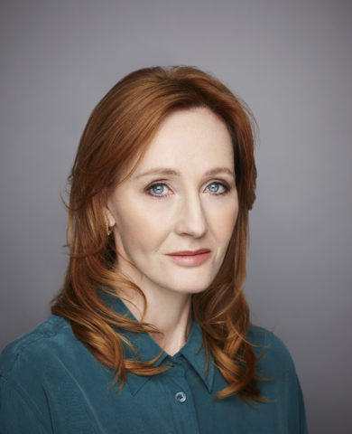

A Harry Potter J. K. Rowling hét kötetből álló, fantasy műfajú regénysorozata. Főhőse egy kamasz varázsló, Harry Potter, és az ő barátai,
Ron Weasley és Hermione Granger, akik a Roxfort Boszorkány- és Varázslóképző Szakiskola tanulói. A történet arról szól, miként próbálja meg Harry
legyőzni a gonosz varázslót, Voldemort Nagyurat, aki megölte Harry szüleit és megpróbálja meghódítani a varázslóvilágot, s leigázni a varázstalan
embereket, a muglikat. A könyv-sorozatból számos film, videójáték és más termék is készült.
A sorozat első kötete 1997-ben jelent meg Harry Potter és a bölcsek köve címen, ami után óriási világsiker lett a többi kötet is.
Az utolsó könyvet 2007 júniusában adták ki, azóta több mint 450 millió példányt adtak el a sorozatból, összesen 78 nyelven.
Az utolsó négy kötet egymás után állította fel a „leggyorsabban eladott könyvek” rekordját a történelemben.
A sorozatot a Warner Bros. filmesítette meg, a hetedik könyvet két filmre bontották, hat hónapnyi eltéréssel a megjelenésük között.
A Harry Potter-sorozathoz kapcsolódóan rengeteg terméket készítettek, így összesen 15 milliárd fontnyi értéke van a Harry Potter márkanévnek,
ami átszámítva több mint 5 billió forint.
#1
A Harry Potter-széria legelső forgatási napján a Bölcsek köve záró jelenetével vette kezdetét a forgatás, a Roxmorts-i vasútállomáson.
A baziliszkusznak csaknem 8 méter hosszú robot makettjét építették meg a forgatáshoz (ez persze csak egy része volt a teljes állatnak),
erre jött rá a kígyó bőréül szolgáló műanyag borítás.A baziliszkusz nyakát működtető hidraulikus robototkésőbb felhasználták
a Magyar Mennydörgőhöz is!
#2
Daniel Radcliffe (Harry Potter)-nek kék, a könyvben Harrynek viszont zöld szeme van. A probléma áthidalására kezdetben, még kontaktlencsével
próbálkozott a stáb, ugyanakkor mindez nagyon kellemetlen volt Danielnek, így végül maradt a kék szem.
#3
Richard Harris (1930-2002) alakította Dumbledore professzort az első két részben. Amilyen nehezen adta be a derekát, hogy elvállalja (unokája unszolására)
a szerepet, végül annyira ragaszkodott hozzá. A Titkok kamrája utolsó három forgatási napján nagyon beteg lett (korábban előfordult, hogy egyes jelentekhez
testdublőrt is hívtak), végül kómába is esett, bár az orvosok azt mondták, hogy kár izgulni, jobban lesz. Amikor Chris Columbus (rendező) utoljára látogatta
meg a színészt, Richard azt mondta a direktornak:„Eszedbe ne jusson helyettem mást felkérni a szerepre!” A Titkok kamrája premierjét követően nem sokkal,
Richard Harris, az egyik legtehetségesebb ír színész 72 éves korában (nyirokmirigyrákban) elhunyt.
#4
Az első rész forgatásakor (mely 169 napot vett igénybe, és ebbe még nem számoltuk bele az utóforgatást és az utómunkát – így jött ki a 11 hónap!)
napi 9,5 órán át zajlottak a felvételek, óránként 15 perc szünettel megszakítva.
Így a tényleges forgatás kb. napi négy órát jelentett. A forgatási helyszínek közötti ingázás 3 órát vett igénybe.
A gyerekek e mellett természetesen még tanultak is, a forgatás helyszínén kialakított tanuló szobákban, saját tanítókkal.
#5
Talán nem is hinnéd, de Chris Columbus még a szereplőválogatások alkalmával gondolt egyet, és sebhelyet rajzolt Tom Felton homlokára,
rá adta az ikonikussá vált szemüveget, és elgondolkoztak egy röpke pillanat erejéig, milyen lenne Tom a szerepben.
Természetesen, végül Draco Malfoy szerepét kapta meg, amiért olyan lenyűgözően hozta a karaktert a próbán.
| Kit játszott? | Ki? |
|---|---|
| Harry Potter | Daniel Racliffe |
| Ron Weasley | Rupert Grint |
| Hermione Granger | Emma Watson |
| Draco Melfoy | Tom Felton |
| Perselus Piton | Alan Rickman |
| Albus Dumbledor | Richard Harrys |
| Voldemort Nagyúr | Ralph Fiennes |
| Ginny Weasley | Bonnie Wright |
| Luna Lovegood | Evanna Lynch |
| Nevielle Longbottom | Matthew Lewis |
A legnagyobb fanok már tudhatják, hogy a Harry Potter nem állt meg fejlődésben és már saját weboldala is van. Ha érdekel csekkold!
Érdekességek
Díjai
Az első szöveg forrása: Wikipédia
További érdekességekért: Katt ide